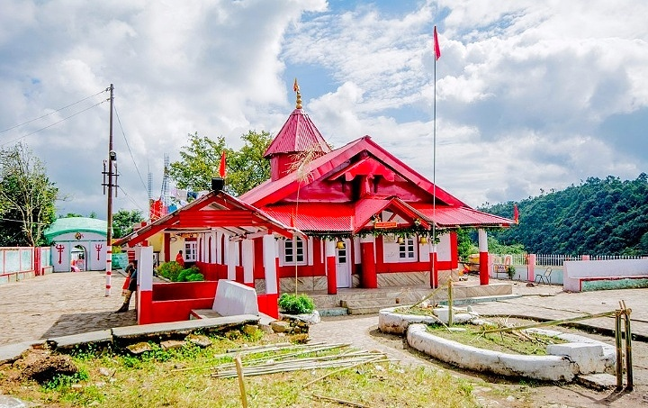
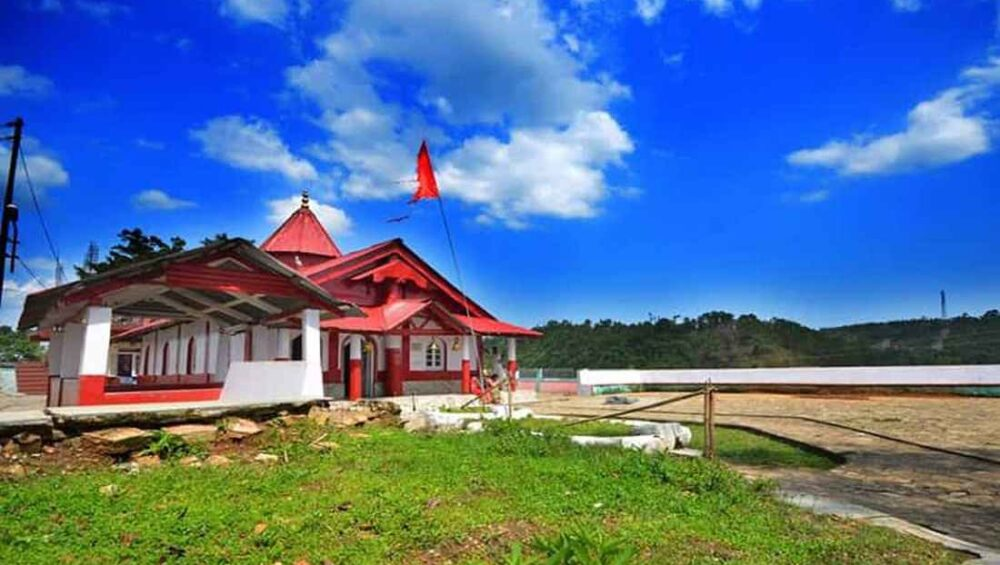

Nartiang Durga Temple


Nartiang Durga Temple
Nartiang Durga Temple is a 600-year-old temple located in the West Jaintia Hills district of Meghalaya in northeastern India.[1] It is one of the 51 Shakta pithas and is one of the holiest sites for devotees of the Shaktism sect of Hinduism.[2] The Hindus in the Jaintia Hills of Meghalaya believes that this temple is the permanent abode of Goddess Durga. The temple draws a large number of pilgrims from all over the country on occasion of Durga Puja.[3] The Shakti of Nartiang Devi shrine is worshipped as Jayanti and the Bhairava as Kamadishwar.
Significance
The Nartiang Devi Temple is believed to be a Shakta pitha, one of the most revered shrines of Shaktism as Shakta pithas are Holy abodes of Parashakti. The Shakta pithas have originated from the mythology of Daksha yagna and Sati's self immolation Shiva carried the corpse of Sati Devi and 51 body parts of the corpse fell in the path He had wandered. Each temple has shrines for both Shakti as well as the corresponding male energy counterpart Kalabhairava. The "Shakti" of Nartiang Devi shrine is addressed as 'Jayanti' and the "Kalabhairava" as 'Kamadishwar'. It is believed that Sati Devi's left thigh had fallen there.
History
Devi's left thigh is believed to have fallen at Nartiang in the Jaintia Hills. Hence the Goddess is known as Jainteshwari. The Jaintia king Jaso Manik (1606–1641) had married Lakshmi Narayana, the daughter of the Hindu Koch king Nara Narayana. It is believed that it was Lakshmi Narayana who had influenced the Jaintia Royalty to embrace Hinduism. King Dhan Manik had made Nartiang the summer capital of the Jaintia Kingdom about 600 years ago. One night, the goddess appeared to him in a dream and informed him of the significance of the place and asked him to build a temple in Her honour. Following this, the Jainteshwari temple in Nartiang was established. The strategic location of the temple and presence of weapons like cannons suggests that the temple must have been part of a fort of the Jaintia Kings.
Worship
The rites at the temple are not performed the conventional way as in the plains, but in a unique way, a blend of Hindu and ancient Khasi traditions. The local chieftain or Syiem is considered the chief patron of the temple. Even today, during Durga Puja, the Syiem sacrifices goats. Durga Puja is the most important festival of this temple. During Durga Puja, a banana plant is dressed up and worshipped as the Goddess. At the end of the four-day festivities, the plant is ceremoniously immersed in the Myntdu River. A gun salute is also given to the Goddess on the occasion.
At present
The Central Puja Committee, the official representative of the Hindu community in Meghalaya, is the caretaker of the temple. It finances a major part of the daily expenses incurred by the temple and carries out development activities in the temple premises. It is also responsible for the popularisation of the Durga Puja conducted in this ancient temple. Durga puja is done every autumn in a unique way with the fusion of the culture of Bengal and that of the Khasi-Jaintia Hills.
In conformity of the Khasi custom of not using figurine images of Gods and Goddesses, the image of Durga is represented by a plantain trunk decked with marigold flowers. Close by, within walking distance, is the Shiva temple where one can see the remains of ancient cannons from the past inside the temple. At present there lies a Hindu temple in this vicinity and the priests who practice there are direct descendants of the original priests that came from Jaintiapur.
In 2017, the union minister Kiren Rijiju said that the temple will be declared as a heritage site.